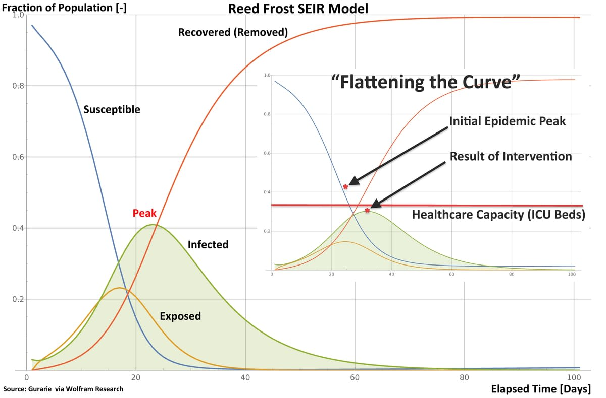
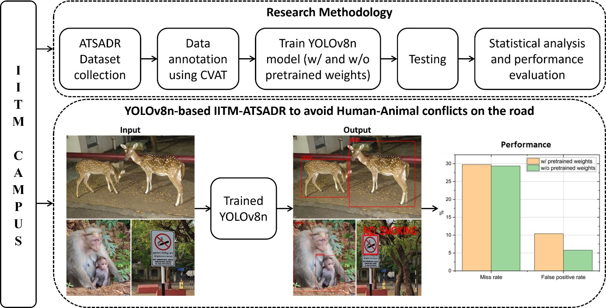

RESEARCH WORK
“Research is creating new knowledge.” — Neil Armstrong

Studies in Computational Intelligence (Vol. 1009)
A Comparative Study on Parameter Estimation of COVID Epidemiological Models Using Differential Evolution Algorithm
Springer · Jan 2022
- Formulated parameter estimation as an optimization problem (Differential Evolution).
- Analyzed model predictions across top-5 Indian states.
- Produced robust forecasts using optimal parameters.

ICCICA 2021 (IEEE)
Animal Detection for Road Safety using Deep Learning
IEEE · Nov 2021
- CNN pipeline to detect animals in live video (91% accuracy).
- Alerts drivers 3 seconds before crossing.
- Scalable to open-source datasets for continuous improvement.